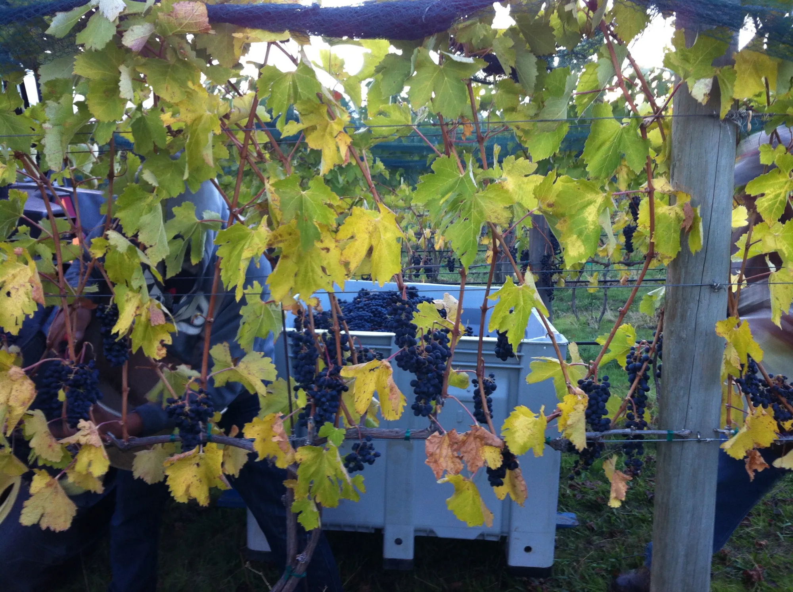
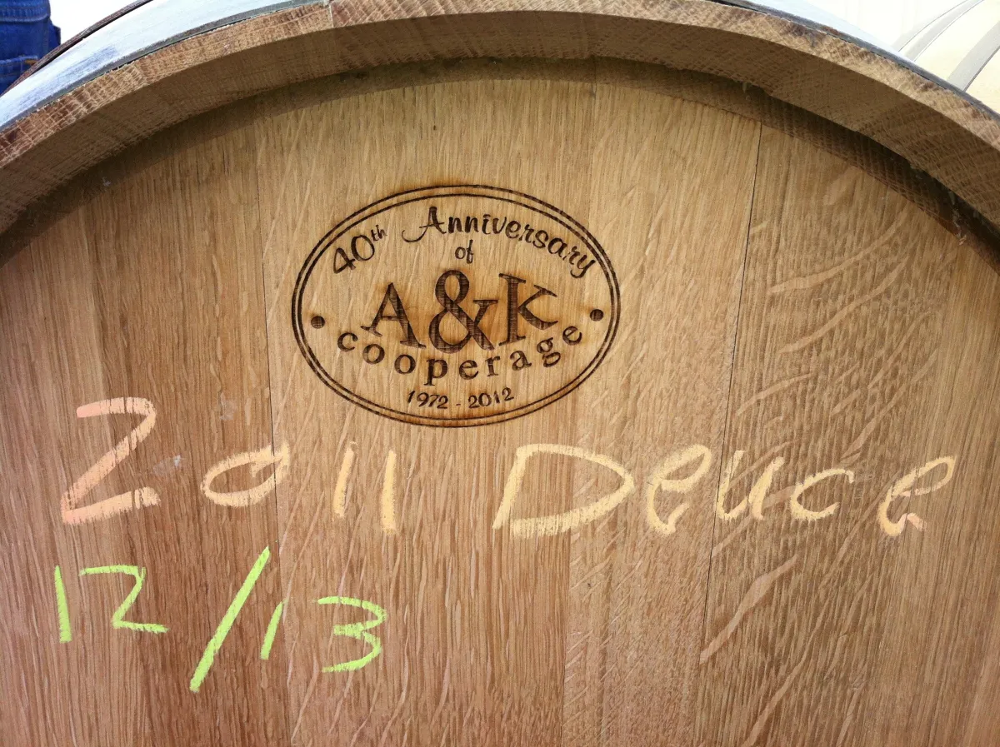
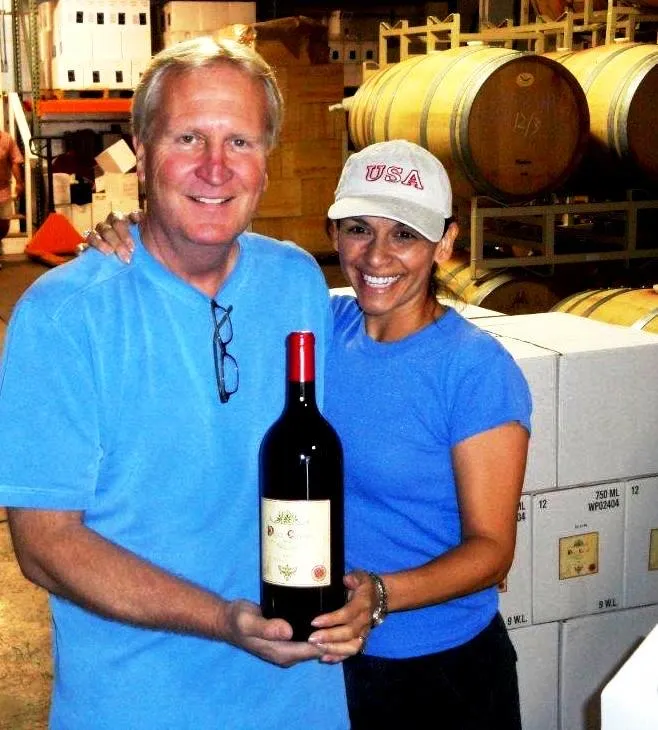
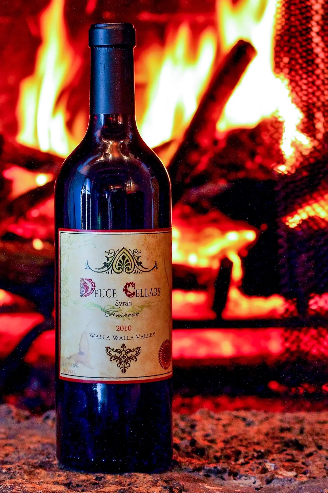

Made the slow way, in Walla Walla.
It started with a piece of land.
In 2006, Leon and Laurie planted Syrah at Moonlight Vineyard in the Walla Walla Valley. The river rock soil there drains hard and holds the heat, and Syrah loves it.
They farmed it themselves and learned how that ground behaves in a wet spring and a dry summer. The first grapes came in 2008. The vineyard has since changed hands, but Deuce still buys its fruit from the same rows Leon and Laurie planted.

“The recipe stays the same, and the wine keeps getting better.”The Deuce philosophy
One wine. No shortcuts.

Deuce is 100% Syrah, made by hand in small lots. Whole berries ferment in open bins and are punched down by hand, then the wine goes straight to barrel and stays there for 30 to 36 months. It is bottled unfiltered at Five Star Cellars in Walla Walla.
Fewer than 300 cases are made in a typical year. Some vintages are far smaller: the 2020 harvest gave us just 96 cases.
River rock soil in the Walla Walla Valley. The same rows since 2006.
Fermented in open bins and punched down by hand.
Medium-toast Missouri oak barrels from The Oak Cooperage.
Bottled without filtering, so nothing is taken out.

Nearly three years in barrel. Every year.
Deuce Cellars
Typical red wine
Our barrels come from The Oak Cooperage in Higbee, Missouri, the cooperage owned by Silver Oak. We have bought from them since our very first vintage. The long stay in Missouri oak gives Deuce its satin texture and the integrated tannins people remember.
Nearly twenty years of Deuce.
- 2006
The vines go in
Leon and Laurie plant Syrah at Moonlight Vineyard.
- 2008
First harvest
The first vintage of Deuce Cellars Reserve Syrah goes into Missouri oak.
- 2010
First bottling
In July 2010 the 2008 Reserve Syrah is bottled. Every vintage since has followed the same recipe.
- 2017
Double Gold
The 2017 vintage earns Double Gold at the San Francisco Chronicle Wine Competition and Gold at the Critics Challenge.
- 2025
97 points, Best of Class
The 2018 vintage is named Best of Class with 97 points at the SavorNW Wine Awards.
- Today
The 2019 is pouring
The 2020 and 2022 are resting in bottle, and the 2025 harvest is in barrel.

Built by word of mouth.
Deuce found its people in Portland, one glass at a time, and became a staple on high-end restaurant lists there. It is distributed in Oregon by Foodie Wines, LLC.
